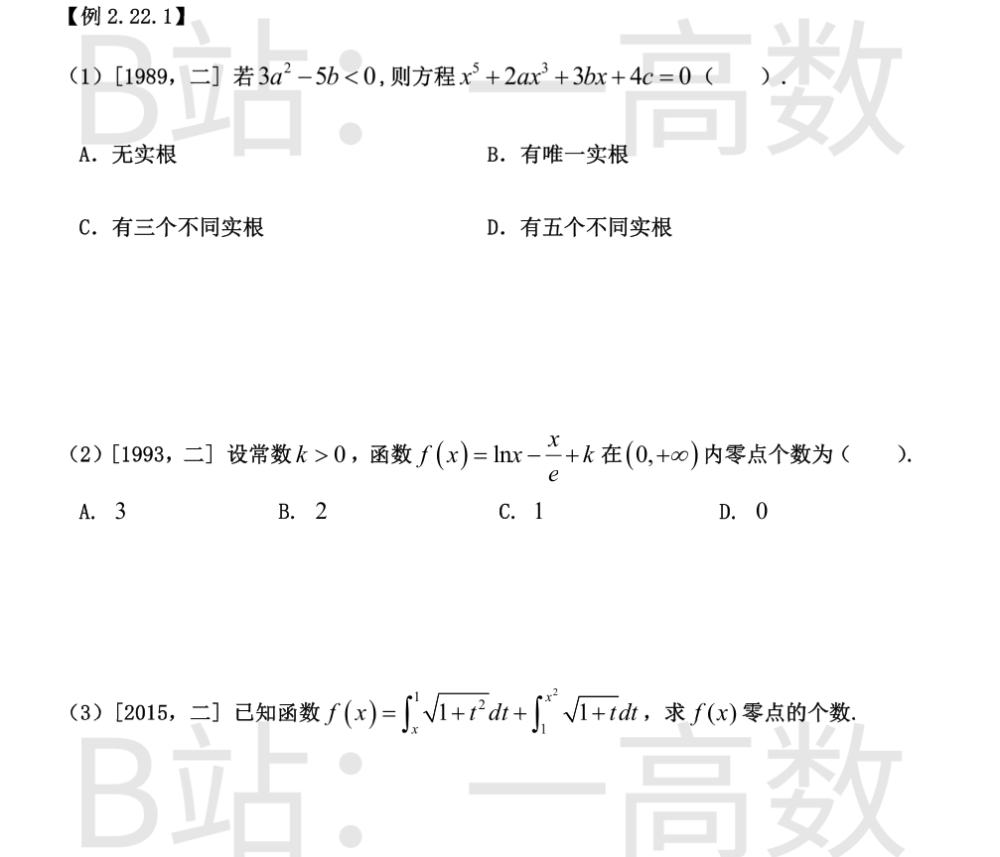
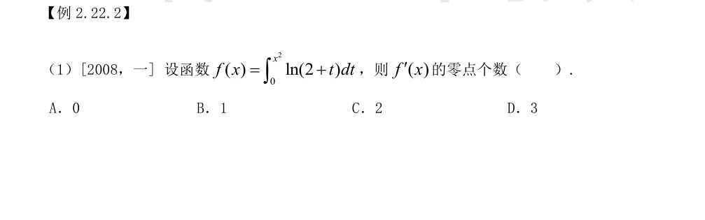
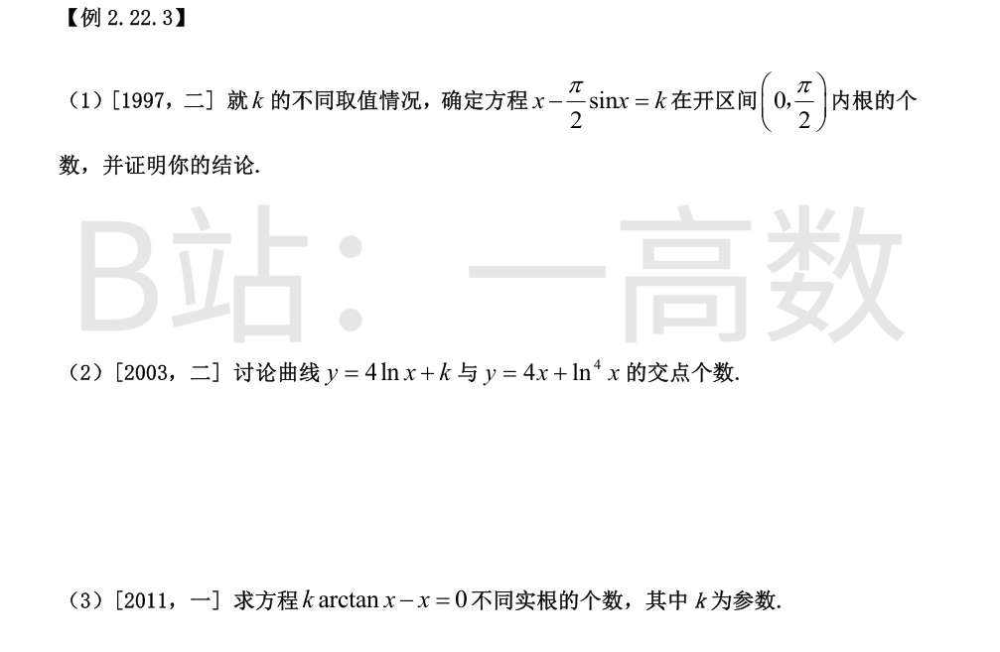
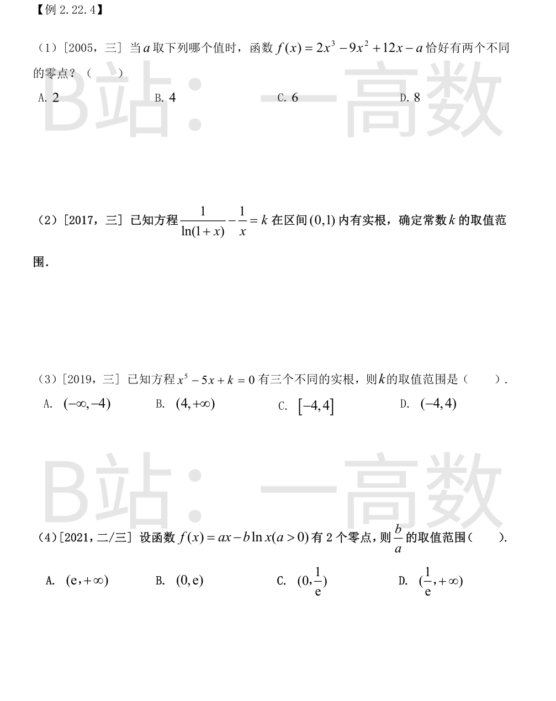
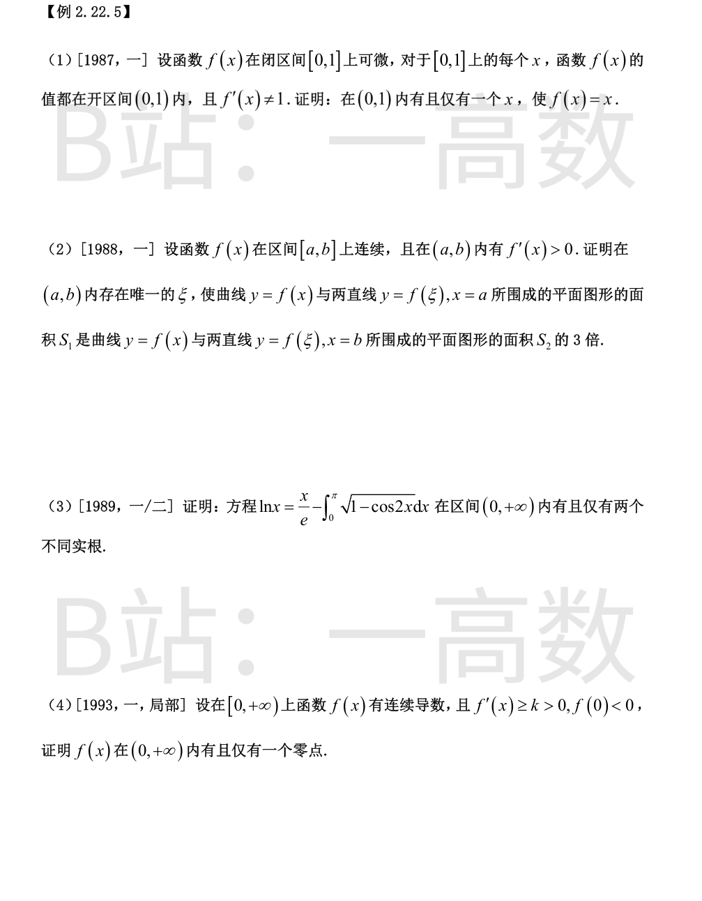
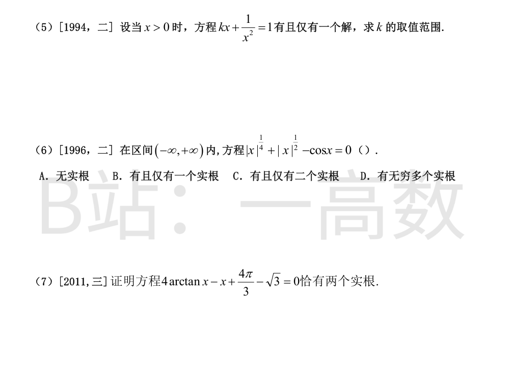
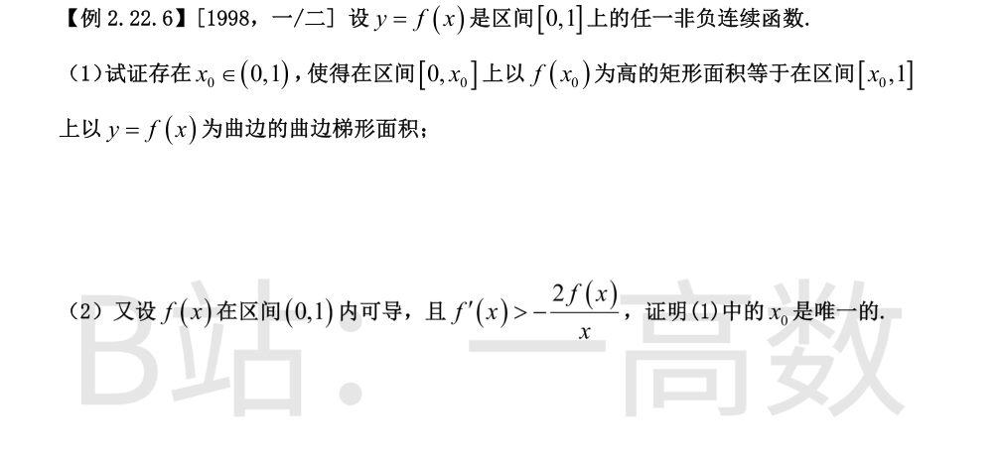

由 3a^2-5b<0 得 b>\dfrac{3}{5}a^2\ge0。设 f(x)=x^5+2ax^3+3bx+4c，则
$$f'(x)=5x^4+6ax^2+3b.$$\n
视其为 u=x^2\ge0 的二次函数 q(u)=5u^2+6au+3b：
- 若 a\ge0：q(u)\ge q(0)=3b>0；
- 若 a<0：最小值在 u=-\dfrac{3a}{5}>0 处，q\left(-\dfrac{3a}{5}\right)=-\dfrac{9a^2}{5}+3b>0（等价于 b>\dfrac35a^2，正是条件）。
故 f'(x)>0 在 (-\infty,+\infty) 恒成立，f 严格单调增。又 \lim_{x\to-\infty}f(x)=-\infty，\lim_{x\to+\infty}f(x)=+\infty（奇次首正多项式），由零点定理与严格单调性，方程恰有一个实根。选 B。
f'(x)=\dfrac{1}{x}-\dfrac{1}{e}，唯一驻点 x=e：x<e 时 f'>0，x>e 时 f'<0，故 f(e)=1-1+k=k>0 为最大值。
端点趋势：x\to0^+ 时 \ln x\to-\infty，f\to-\infty；x\to+\infty 时 \ln x-\dfrac{x}{e}=x\left(\dfrac{\ln x}{x}-\dfrac1e\right)\to-\infty，f\to-\infty。
于是 f 在 (0,e) 由 -\infty 严格增到 k>0：恰一零点；在 (e,+\infty) 由 k>0 严格减到 -\infty：恰一零点。共 2 个零点。选 B。
变限积分求导：
$$f'(x)=-\sqrt{1+x^2}+2x\sqrt{1+x^2}=(2x-1)\sqrt{1+x^2}.$$
x<\dfrac12 时 f'<0，x>\dfrac12 时 f'>0，故 f 在 x=\dfrac12 取最小值；又 f(1)=0+0=0，x=1 是零点。
x\to\pm\infty 时积分区间长度发散且被积函数为正，\lim_{x\to\pm\infty}f(x)=+\infty。计算最小值：
$$\int_{1/2}^{1}\sqrt{1+t^2}\,dt=\left[\frac{t}{2}\sqrt{1+t^2}+\frac12\ln\left(t+\sqrt{1+t^2}\right)\right]_{1/2}^{1}\approx0.6277,$$
$$\int_{1/4}^{1}\sqrt{1+t}\,dt=\left[\frac{2}{3}(1+t)^{3/2}\right]_{1/4}^{1}=\frac{2}{3}\left(2^{3/2}-\left(\frac54\right)^{3/2}\right)\approx0.9539,$$
$$f\!\left(\frac12\right)=\int_{1/2}^{1}\sqrt{1+t^2}\,dt-\int_{1/4}^{1}\sqrt{1+t}\,dt\approx-0.3262<0.$$
故 f 在 (-\infty,1/2) 上从 +\infty 严格降到负的最小值：恰一零点；在 (1/2,+\infty) 上从负最小值严格升到 +\infty：恰一零点（即 x=1）。合计恰有 2 个零点。

变限积分求导：
$$f'(x)=2x\ln(2+x^2).$$
因 2+x^2\ge2>1，故 \ln(2+x^2)\ge\ln2>0 恒成立，于是 f'(x)=0 当且仅当 x=0。f'(x) 恰有 1 个零点。选 B。

设 g(x)=x-\dfrac{\pi}{2}\sin x-k，x\in\left(0,\dfrac{\pi}{2}\right)。
$$g'(x)=1-\frac{\pi}{2}\cos x=0\iff x_0=\arccos\frac{2}{\pi}\in\left(0,\frac{\pi}{2}\right).$$
x<x_0 时 g'<0，x>x_0 时 g'>0，故 g 在 x_0 处取最小值 g(x_0)=x_0-\dfrac{\pi}{2}\sin x_0-k（其中 \sin x_0=\sqrt{1-\frac{4}{\pi^2}}=\dfrac{\sqrt{\pi^2-4}}{\pi}，故 c=x_0-\dfrac{\pi}{2}\sin x_0=\arccos\dfrac2\pi-\dfrac{\sqrt{\pi^2-4}}{2}<0）。记 \varphi(x)=x-\dfrac{\pi}{2}\sin x（即 k=0 情形），\varphi 在 (0,x_0] 严格降、在 [x_0,\pi/2) 严格升，两端极限均为 0，故 \varphi(x)<0 在开区间内恒成立且值域为 [c,0)。
- 若 k\ge0：g(x)=\varphi(x)-k<0 恒成立，无根；
- 若 k<c：g(x_0)=c-k>0 且两端极限 -k>0，g(x)>0 恒成立，无根；
- 若 k=c：g(x_0)=0 为最小值，恰 1 根 x=x_0；
- 若 c<k<0：两端极限 -k>0 而最小值 g(x_0)=c-k<0，g 在 (0,x_0) 严格减、(x_0,\pi/2) 严格增，各恰 1 根，共 2 根。\qquad\blacksquare
交点满足 4\ln x+k=4x+\ln^4x，即 k=g(x):=4x+\ln^4x-4\ln x\ （x>0）。
$$g'(x)=4+\frac{4\ln^3x}{x}-\frac{4}{x}=\frac{4\left(x+\ln^3x-1\right)}{x}.$$
令 h(x)=x+\ln^3x-1：h(1)=0，h'(x)=1+\dfrac{3\ln^2x}{x}\ge1>0，故 h 严格增，x<1 时 h<0，x>1 时 h>0。于是 g 在 (0,1) 严格减、(1,+\infty) 严格增，最小值 g(1)=4+0-0=4。
端点趋势：x\to0^+ 时 \ln^4x\to+\infty（占主导），g\to+\infty；x\to+\infty 时 g\to+\infty。
故：k<4 时方程无解，无交点；k=4 时恰一解 x=1，恰 1 个交点；k>4 时（0,1）与 (1,+\infty) 内各恰一解，恰 2 个交点。
x=0 恒为根；左端为奇函数，根关于原点对称，只需讨论 x>0。
对 k\ne0，k\arctan x=x\iff\varphi(x):=\dfrac{\arctan x}{x}=\dfrac{1}{k}\ (x>0)。
$$\varphi'(x)=\frac{1}{x^2}\left(\frac{x}{1+x^2}-\arctan x\right).$$
因 \left(\dfrac{x}{1+x^2}-\arctan x\right)'=\dfrac{(1-x^2)(1+x^2)-x^2\cdot 2}{(1+x^2)^2}=-\dfrac{2x^2}{(1+x^2)^2}<0，且 x\to0^+ 时该括号趋于 0，故括号内恒负，\varphi 在 (0,+\infty) 严格减。又 \lim_{x\to0^+}\varphi(x)=1，\lim_{x\to+\infty}\varphi(x)=0，即 \varphi 的值域为 (0,1) 且一一对应。
- k\le0：x>0 时 k\arctan x\le0<x，无正根；由奇性无负根；恰 1 根 x=0；
- 0<k\le1：x>0 时 k\arctan x\le\arctan x<x（因 \arctan x<x 对 x>0 成立），无正根；恰 1 根 x=0；
- k>1：\dfrac1k\in(0,1)，由 \varphi 严格减且值域 (0,1)，恰 1 个正根；由奇对称性恰 1 个负根；加 x=0 共 3 个不同实根。

f'(x)=6x^2-18x+12=6(x-1)(x-2)。极大值 f(1)=2-9+12-a=5-a，极小值 f(2)=16-36+24-a=4-a；x\to\pm\infty 时 f\to\pm\infty。
连续函数恰有两个不同零点当且仅当极大值与极小值中恰有一个为零（若两极值均正或均负则仅 1 个零点，若极大>0 且极小<0 则 3 个零点）：
- a=4：极小值 f(2)=0，f(0)=-4<0，f(1)=1>0：零点为 (0,1) 内一点与 x=2，恰 2 个；
- a=5：极大值 f(1)=0，同理恰 2 个（但 5 不在选项中）。
选项中只有 a=4，选 B。
令 g(x)=\dfrac{1}{\ln(1+x)}-\dfrac{1}{x}，x\in(0,1)。方程有根 \iff k 属于 g 在 (0,1) 上的值域。
$$g'(x)=\frac{1}{x^2}-\frac{1}{(1+x)\ln^2(1+x)}.$$
比较 x^2 与 (1+x)\ln^2(1+x)：设 p(x)=(1+x)\ln^2(1+x)-x^2，则 p(0)=0，p'(x)=\ln^2(1+x)+2\ln(1+x)-2x，p'(0)=0，p''(x)=\dfrac{2[\ln(1+x)-x]}{1+x}<0\ (x>0)。故 p'<0、p<0，即 (1+x)\ln^2(1+x)<x^2，从而 g'(x)<0，g 在 (0,1) 上严格减。
端点极限：由 \ln(1+x)=x-\dfrac{x^2}{2}+o(x^2)，
$$g(x)=\frac{1}{x}\left(1-\frac{x}{2}+o(x)\right)^{-1}-\frac1x=\frac{1}{x}\left(1+\frac{x}{2}+o(x)\right)-\frac1x\to\frac12\quad(x\to0^+),$$
$$\lim_{x\to1^-}g(x)=\frac{1}{\ln2}-1.$$
故 g((0,1))=\left(\dfrac{1}{\ln2}-1,\ \dfrac12\right)，即 k 的取值范围为 \dfrac{1}{\ln2}-1<k<\dfrac12。
f(x)=x^5-5x+k，f'(x)=5x^4-5=5(x^2+1)(x-1)(x+1)。极大值 f(-1)=-1+5+k=4+k，极小值 f(1)=1-5+k=k-4；且 x\to-\infty 时 f\to-\infty，x\to+\infty 时 f\to+\infty。
五个三次拐折结构下，恰有三个不同实根 \iff 极大值>0 且极小值<0：
$$4+k>0\ \text{且}\ k-4<0\iff -4<k<4.$$
（若极大值=0 或极小值=0 则恰 2 个不同实根；否则仅 1 个。）选 D。
定义域 x>0。
若 b\le0：f'(x)=a-\dfrac{b}{x}>0，f 严格增。b<0 时 f(0^+)=-\infty、f(+\infty)=+\infty，恰 1 个零点；b=0 时 f=ax>0 无零点。故均不合。
若 b>0：f'(x)=a-\dfrac bx=0\iff x=\dfrac ba；f 在 (0,\dfrac ba) 严格减、(\dfrac ba,+\infty) 严格增。f(0^+)=+\infty（-b\ln x\to+\infty），f(+\infty)=+\infty，最小值
$$f\left(\frac ba\right)=b-b\ln\frac ba=b\left(1-\ln\frac ba\right).$$
恰有 2 个零点 \iff 最小值<0\iff 1-\ln\dfrac ba<0\iff\dfrac ba>e。
故 \dfrac ba\in(e,+\infty)，选 A。


**存在性：** 令 g(x)=f(x)-x，g 在 [0,1] 连续。g(0)=f(0)>0（因 f(0)\in(0,1)），g(1)=f(1)-1<0。由零点定理，存在 x\in(0,1) 使 g(x)=0，即 f(x)=x。
**唯一性：** 反设 0<x_1<x_2<1 使得 f(x_1)=x_1，f(x_2)=x_2，即 g(x_1)=g(x_2)=0。对 g 在 [x_1,x_2] 上用罗尔定理：存在 \xi\in(x_1,x_2)\subset(0,1) 使 g'(\xi)=0，即 f'(\xi)=1，与 f'(x)\ne1 矛盾。
故这样的 x 有且仅有一个。\qquad\blacksquare
由 f'(x)>0 知 f 严格增：x<t 时 f(x)<f(t)，x>t 时 f(x)>f(t)，故对任意 t\in(a,b) 两块面积恒正：
$$S_1(t)=\int_a^t\left[f(t)-f(x)\right]dx=(t-a)f(t)-\int_a^t f(x)\,dx,$$
$$S_2(t)=\int_t^b\left[f(x)-f(t)\right]dx=\int_t^b f(x)\,dx-(b-t)f(t).$$
令 F(t)=S_1(t)-3S_2(t)，F 在 [a,b] 连续，且
$$F(a)=-3\int_a^b\left[f(x)-f(a)\right]dx<0,\qquad F(b)=\int_a^b\left[f(b)-f(x)\right]dx>0.$$
由零点定理，存在 \xi\in(a,b) 使 F(\xi)=0，即 S_1=3S_2。
将 F 改写为 F(t)=(t-a)f(t)-\int_a^t f\,dx-3\int_t^b f\,dx+3(b-t)f(t)，求导：
$$F'(t)=f(t)+(t-a)f'(t)-f(t)+3f(t)-3f(t)+3(b-t)f'(t)=f'(t)\left[(t-a)+3(b-t)\right]>0.$$
故 F 严格增，\xi 唯一。\qquad\blacksquare
先算积分：
$$\int_0^{\pi}\sqrt{1-\cos2x}\,dx=\int_0^{\pi}\sqrt{2}\,|\sin x|\,dx=\sqrt2\int_0^{\pi}\sin x\,dx=2\sqrt2.$$
方程化为 g(x)=\ln x-\dfrac{x}{e}+2\sqrt2=0。
$$g'(x)=\frac1x-\frac1e=0\iff x=e,$$
g 在 (0,e) 严格增、(e,+\infty) 严格减，最大值 g(e)=1-1+2\sqrt2=2\sqrt2>0。
端点趋势：x\to0^+ 时 g\to-\infty；x\to+\infty 时 \ln x-\dfrac{x}{e}=x\left(\dfrac{\ln x}{x}-\dfrac1e\right)\to-\infty。
故 g 在 (0,e) 内由 -\infty 增到正的最大值：恰一零点；在 (e,+\infty) 内由正最大值减到 -\infty：恰一零点。共两个不同实根。\qquad\blacksquare
**存在性：** 取 x_1>-\dfrac{f(0)}{k}>0，由牛顿-莱布尼茨公式与 f'\ge k：
$$f(x_1)=f(0)+\int_0^{x_1}f'(t)\,dt\ge f(0)+kx_1>f(0)+k\left(-\frac{f(0)}{k}\right)=0.$$
即 f(x_1)>0。f 连续且 f(0)<0<f(x_1)，由零点定理存在 x_0\in(0,x_1)\subset(0,+\infty) 使 f(x_0)=0。
**唯一性：** f'(x)\ge k>0，故 f 在 [0,+\infty) 上严格增，至多一个零点。
综上，f 在 (0,+\infty) 内有且仅有一个零点。\qquad\blacksquare
对 x>0，方程等价于
$$k=\frac{1}{x}-\frac{1}{x^3}=:g(x).$$
$$g'(x)=-\frac{1}{x^2}+\frac{3}{x^4}=\frac{3-x^2}{x^4},$$
g 在 (0,\sqrt3) 严格增、(\sqrt3,+\infty) 严格减，最大值
$$g(\sqrt3)=\frac{1}{\sqrt3}-\frac{1}{3\sqrt3}=\frac{2}{3\sqrt3}=\frac{2\sqrt3}{9}.$$
且 \lim_{x\to0^+}g(x)=-\infty，\lim_{x\to+\infty}g(x)=0^+（>0）。逐段讨论解的个数：
- k>\dfrac{2\sqrt3}{9}：无解；
- k=\dfrac{2\sqrt3}{9}：恰一解 x=\sqrt3；
- 0<k<\dfrac{2\sqrt3}{9}：增段与减段各一解，共 2 解；
- k=0：g(x)=0\iff x^2=1\iff x=1，恰一解；
- k<0：g 在 (0,\sqrt3) 上从 -\infty 连续增到 \dfrac{2\sqrt3}{9}>0，恰一次取到 k；在 (\sqrt3,+\infty) 上 g>0 无解；恰一解。
故有且仅有一个解 \iff k\le0 或 k=\dfrac{2\sqrt3}{9}。
令 g(x)=|x|^{1/4}+|x|^{1/2}-\cos x，g 为偶函数，只需讨论 x\ge0。g(0)=-1<0。
当 x\in(0,1)：
$$g'(x)=\frac14x^{-3/4}+\frac12x^{-1/2}+\sin x>0,$$
三项在 (0,1) 内均严格为正，g 严格增；且 g(1)=1+1-\cos1>0，故 (0,1) 内恰有一个零点。
当 x\ge1：x^{1/4}+x^{1/2}\ge1+1=2>1\ge\cos x，故 g(x)>0，无零点。
由偶性，(-1,0) 内恰有一个零点。合计恰有两个实根。选 C。
令 g(x)=4\arctan x-x+\dfrac{4\pi}{3}-\sqrt3。
$$g'(x)=\frac{4}{1+x^2}-1=\frac{3-x^2}{1+x^2},$$
g 在 (-\infty,-\sqrt3) 严格减、(-\sqrt3,\sqrt3) 严格增、(\sqrt3,+\infty) 严格减；极大值 g(\sqrt3)=\dfrac{4\pi}{3}-\sqrt3+\dfrac{4\pi}{3}-\sqrt3=\dfrac{8\pi}{3}-2\sqrt3>0。
关键点：
$$g(-\sqrt3)=4\cdot\left(-\frac{\pi}{3}\right)+\sqrt3+\frac{4\pi}{3}-\sqrt3=0,$$
即 x=-\sqrt3 恰好是根。
端点趋势：x\to-\infty 时 4\arctan x\to-2\pi 而 -x\to+\infty，故 g\to+\infty；x\to+\infty 时 g\to-\infty。
于是：在 (-\infty,-\sqrt3) 上 g 从 +\infty 严格降到 0，内部恒正，无根（x=-\sqrt3 处取到 0）；在 (-\sqrt3,\sqrt3) 上 g 从 0 严格增到正的极大值，内部恒正，无根；在 (\sqrt3,+\infty) 上 g 从正极大值严格降到 -\infty，由零点定理与单调性恰有一根。
故方程恰有两个实根：x=-\sqrt3 与 (\sqrt3,+\infty) 内一点。\qquad\blacksquare

令 F(x)=x\int_x^1 f(t)\,dt。因 f 连续，F 在 [0,1] 连续、(0,1) 内可导，且
$$F(0)=0,\qquad F(1)=1\cdot\int_1^1 f(t)\,dt=0.$$
由罗尔定理，存在 x_0\in(0,1) 使 F'(x_0)=0。而
$$F'(x)=\int_x^1 f(t)\,dt-xf(x),$$
故 \displaystyle\int_{x_0}^1 f(t)\,dt=x_0f(x_0)，即 [0,x_0] 上以 f(x_0) 为高的矩形面积等于 [x_0,1] 上以 y=f(x) 为曲边的曲边梯形面积。\qquad\blacksquare
令 G(x)=\int_x^1 f(t)\,dt-xf(x)（即第 (1) 问中 F'(x)）。则满足条件的点即为 G 的零点。G 在 (0,1) 内可导，且
$$G'(x)=-f(x)-\left[f(x)+xf'(x)\right]=-2f(x)-xf'(x).$$
由条件 xf'(x)>-2f(x)，故 G'(x)<0 在 (0,1) 内恒成立，G 在 (0,1) 上严格单调减，至多有一个零点。
结合第 (1) 问已证存在性，(1) 中的 x_0 是唯一的。\qquad\blacksquare